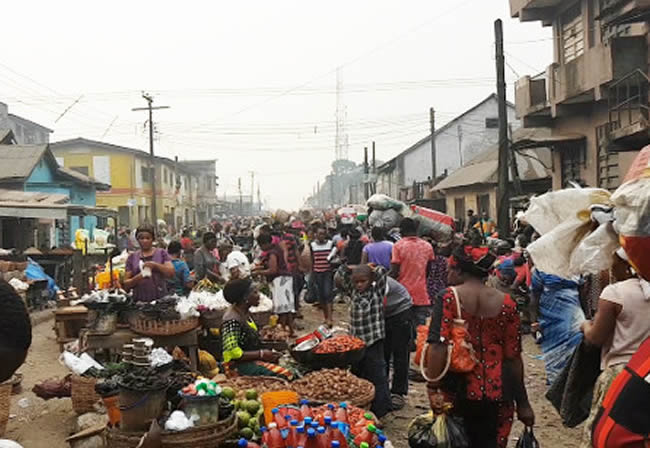

MARKET

Meaning of market:
A market is a place or system where buyers and sellers come together to exchange goods, services, or information.
It can be a physical location, like a local market or shopping centre, or an online platform.
Markets in Nigeria help facilitate trade and determine prices based on supply and demand.
TYPES OF MARKET
Types of markets In Nigeria include:
-
Local Markets: Traditional markets found in towns and cities, where a variety of goods and services are sold, such as Oyingbo Market in Lagos or Wuse Market in Abuja.
-
Supermarkets and Malls: Supermarkets and Malls: Modern retail spaces offering a wide range of products, such as Shoprite, Spar, and various shopping centres.
-
Wholesale Markets: Large markets where goods are sold in bulk to retailers, such as the Balogun Market in Lagos.
-
Online Markets: Digital platforms where goods are bought and sold, such as Jumia and Konga.
-
Specialty Markets: Focused on specific types of products, such as the Ariaria International Market in Aba for textiles and the Kayode Market for electronics.
CHARACTERISTICS OF MARKET
-
Participants: Individuals, small businesses, and large companies who buy and sell goods and services, both in physical markets and online.
-
Pricing: Prices in Nigerian markets are influenced by local supply and demand. For example, prices may change based on the availability of products and consumer preferences.
-
Competition: Many vendors sell similar products in local markets, shopping centres, and online platforms, which can lead to lower prices and improved quality due to competition.
-
Transactions: Buying and selling involve exchanging goods or services for money, using methods like cash, mobile payments, or bank transfers.
-
Local Variations: Markets can differ greatly from one region to another in Nigeria, with variations in products, prices, and market practices reflecting local resources and consumer needs.
FINANCIAL MARKET
A financial market is a place where people buy and sell financial assets. Like shares, bonds, and currencies. It helps facilitate the flow of money and investment in the economy.
TYPES OF FINANCIAL MARKET
-
Money Market: Deals with short-term borrowing and lending.
-
Capital Market: Handles long-term investment and funding.
-
Forex Market: Involves the trading of currencies.
-
Derivatives Market: Focuses on financial contracts derived from other assets.
CAREERS IN CAPITAL MARKET
In Nigeria, careers in the capital market include:
-
Investment Banker: Helps companies and governments raise funds and offers financial advice.
-
Stockbroker: Buys and sells stocks and securities for clients on the Nigerian Stock Exchange.
-
Financial Analyst: Reviews financial data to guide investment choices.
-
Portfolio Manager: Manages investment portfolios for individuals or organisations.
-
Regulator: Works for bodies like the Securities and Exchange Commission (SEC) to enforce market rules and regulations.
COMMODITY MARKET INSTITUTION AND INSTRUMENT TRADED IN CHINA EACH MARKET
commodity markets involve institutions and instruments that facilitate the trading of various goods.
-
Shanghai Futures Exchange (SHFE): Trades a variety of commodities including metals (e.g., copper, aluminium), energy (e.g., crude oil), and agricultural products (e.g., soybeans).
-
Dalian Commodity Exchange (DCE): Focuses on agricultural commodities (e.g., soybeans, corn) and industrial products (e.g., iron ore).
-
Zhengzhou Commodity Exchange (ZCE): Specialises in agricultural products, including wheat and cotton, and other commodities.
-
China Financial Futures Exchange (CFFEX): Primarily deals with financial futures such as stock indices and interest rates, rather than physical commodities.